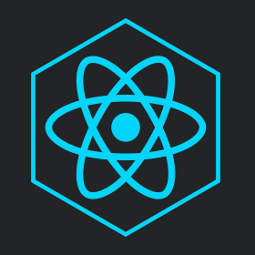
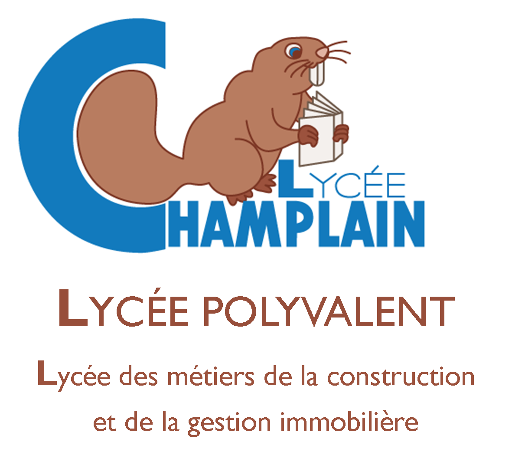
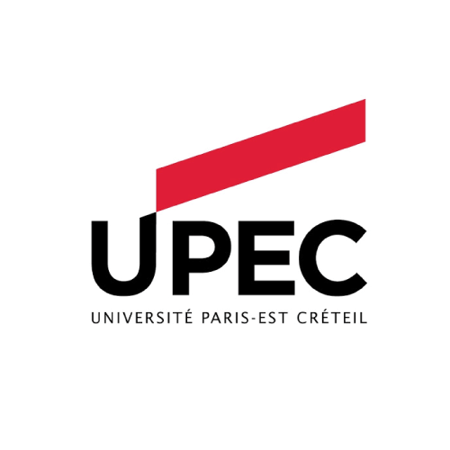
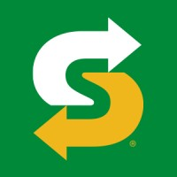
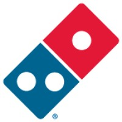
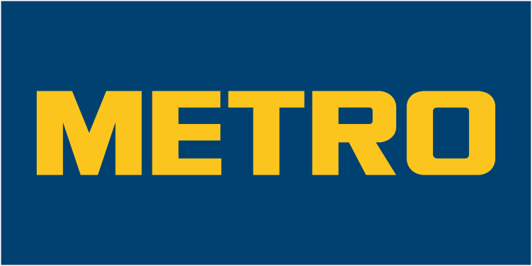
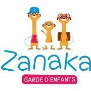

Contacts
Technos pratiquées
-
 Javascript
Javascript
-
 Python
Python
-
 C
C
-
 HTML5
HTML5
-
 CSS3
CSS3
-

ReactJs
-
 NodeJs
NodeJs
-
Linux
Intérêts & Loisirs
-
Basketball National
- Coupe de France IUT
- Champion du 94
- Coupe du 94
-
Tourisme & Nature
- Animaux
- Voyages
- Découvertes
-
Piano
- Musique classique
- Films
- Compositions personnel
-
Lecture
- Finances
- Psychologie
- Corps humain
TareK Kheir
Développeur Web Full Stack
Hello, doté d'une personnalité dynamique et engagée, j’ai toujours été passionné par les nouvelles technologies et tout ce qui touche à l’innovation et le dépassement de soi. Disponible dès à présent, je cherche un stage de fin d'études pour le poste de Développeur Web Full Stack.
Quelques projets réalisés
Formations
-

Pourquoi j'ai choisi ce cursus ❓🤔
Scientifique dans l'âme le Bac S était la seule option envisageable. J'ai choisi la spécialité Physique Chimie en Terminale.
Mon expérience 🚀
J'ai passé 3 années de lycée mémorables et la voie scientifique répondait parfaitement à mes attentes.
Bilan et avis personnel 🎓 🎯
Bac en poche j'ai ressenti la fierté d'avoir réussi mes examens et j'étais impatient de découvrir les études dans le supérieur.
-

Licence Électronique et Génie Informatique
Université Paris-Est-Créteil (2017-2020)Pourquoi j'ai choisi ce cursus ❓🤔
Passioné par les nouvelles technologies je me suis naturellement dirigé vers une licence qui proposait une formation sur les sciences de l'ingénieur, j'ai choisi l'électronique et le génie informatique comme spécialité en deuxième année.
Mon expérience 🚀
Pendant ce cursus j'ai découvert les sciences à un niveau bien plus poussé que celui du lycée, j'ai expérimenté les travaux en laboratoire et réalisé des projets électroniques complets tel que la conception d'engins dirigables à distance et la programmation d'objets connectés. J'ai eu la chance de pouvoir mettre en pratique mes connaissances théoriques et de découvrir l'informatique.
Bilan et avis personnel 🎓 🎯
Cette expérience a été riche en savoir et m'a permis de découvrir ce que j'aimais faire ainsi que de prendre conscience de quels étaient mes points forts et faibles, au terme de cette formation je savais ce que je voulais devenir et je me suis concentré sur l'informatique.
-

Software Engineer
Holberton School Paris (2020 - 2022)Pourquoi j'ai choisi ce cursus ❓🤔
Après avoir découvert l'informatique et les possibilités que ce monde offrait j'ai décidé de me dirigé vers la programmation et plus précisémment, le développement Web. Ce cursus proposait une formation intégralement en anglais en deux étapes, la première étant les fondamentaux qui visaient à construire des bases solides en informatique et la deuxième étape, la spécialisation Web. Cette formation à durée au total 2 ans et procure l'équivalent d'un bac +3/4.
Mon expérience 🚀
La première année à été la plus boulversante car mes connaissances et mon organisation personnel ont faits un réél bond en avant. À la fin de cette année j'étais en mesure de développé une application web de A à Z ( back et front ) en m'appuyant sur des bases solides en réseaux et devops ainsi que l'utilisation des langages et frameworks tel que Python, NodeJs et ReactJs.
La deuxième année s'est déroulée dans la continuité de la première, désormais la mise en place d'APIs complètes ainsi que l'organisation du front-end se font beaucoup plus naturellement et aisément. Mes connaissances et mes compétences ce sont affinées pour faire de moi un développeur aguéri.Bilan et avis personnel 🎓 🎯
Au terme de ce cursus j'estime avoir réellement évolué que ce soit dans l'informatique comme dans ma vie personnelle, la pédagogie de cette formation m'a permis d'acquérir une autonomie et une confiance pour bien démarré ma vie dans le monde professionnel. Je me sens à ce jour capable d'assuré un poste au sein d'une équipe de professionnels tout en sachant que je me dois de continué à apprendre et développé mes connaissances.
Expériences Professionelles
-

Équipier polyvalent
- Préparation de commande
- Service client
- Caisse
-

Équipier polyvalent
- Livraison à domicile
- Préparation de commande
- Service client
-

Employé commercial
- Service client
- Mise en rayon
- Préparation de commande
-

Garde d'enfants
- Responsabilités & Sécurité
- Aide aux devoirs
- Accompagnement aux activités
Compétences secondaires
- Github
- Excel
- Anglais
- Travail d'équipe
- Coopération
- Autonomie